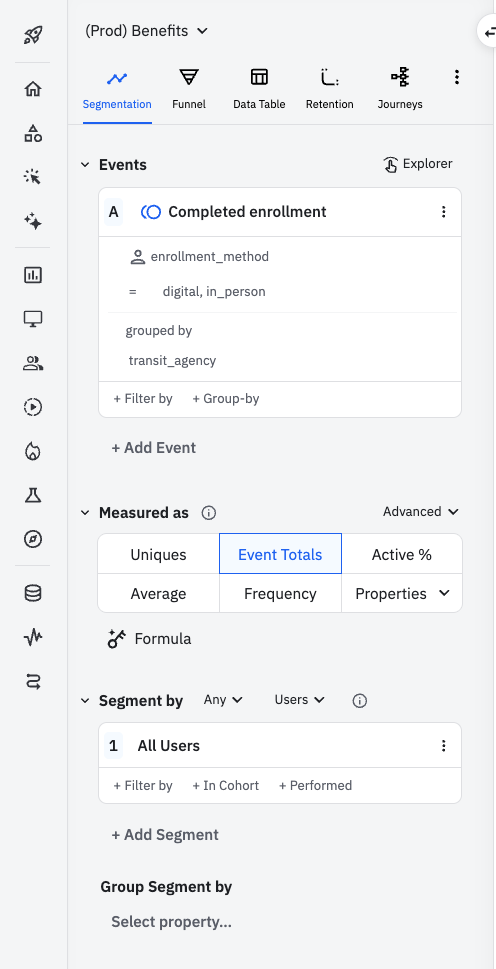

Onboarding a new transit provider ¶
This guide describes the steps needed to add support for a new transit provider to the application and take them from testing to production.
Before starting any configuration, the Cal-ITP team and transit provider staff should have a kickoff meeting to confirm that information provided is complete, implementation plan is feasible, and any approvals needed have been obtained.
Then, the following steps are done by the Cal-ITP team to configure a new transit provider in the Benefits application.
These steps currently assume the transit provider is using Littlepay as their transit processor. Support for integration with Switchio has been added but still needs to be documented, and integration with other transit processors may be added in the future.
Pre-configuration prep work ¶
These items can all be done in parallel.
Create transit provider onboarding epic ¶
Typically performed by the Benefits Product Manager.
- Navigate to the Cal-ITP Benefits repository, Actions tab
- Look in the left bar for the (pinned) workflow called
Agency Onboarding Issue Scaffold, click on this to open the workflow run history - In the center view, on the top right, look for a drop-down button that says
Run workflow, and click this - Leaving the branch selection the default (
main), provide values for the other inputs (some of which are required)- For the
Estimated launch date, enter a value likeAugust 2026 - For the
Initiative issue, enter the number only like1234
- For the
- Click the green
Run workflowbutton under the input fields - Refresh the current page to see an in-progress workflow run, wait for it to finish with a green checkmark
Once the workflow runs successfully, the onboarding epic and all sub-issues will have been created based on the input data provided. They can be further edited, modified from the USB, etc. as normal.
Add transit provider to adoption table ¶
Typically performed by the Benefits Product Manager.
Open a Pull Request adding the new transit provider to the table in the README, similar to this example.
Produce formatted transit provider logos ¶
Typically performed by a designer.
The application currently requires one transit provider logo for display on the landing page. The logo should be white with a clear background in the dimensions below:
- height: 64px
- width: any
Update hardcoded parts of the application ¶
Typically performed by an engineer.
Certain parts of the codebase must be updated to support a new transit provider:
benefits/core/context/agency.py(requires a migration)benefits/eligibility/views.pybenefits/enrollment/context/flow.py- Message files
Here is an example PR that makes these updates for a new transit provider.
Configuration for development and testing ¶
These items can all be done in parallel.
Initial Littlepay configuration ¶
For development and testing, only a Littlepay customer group is needed since there is no need to interact with any discount product. (We don’t have a way to tap a card against the QA system to trigger a discount and therefore have no reason to associate the group with any product.)
This work can begin once the transit provider has a contract in place with Littlepay.
- Cal-ITP uses the transit provider’s Littlepay merchant ID to create a customer group in the Littlepay QA environment for each type of eligibility (e.g. senior).
- Typically performed by transit provider’s Account Manager
- For each group that’s created, a group ID will be returned and should be set as the
group_idon a newLittlepayGroupin the Benefits database. (See Configuration data for more on loading the database.)
- Cal-ITP requests and receives Littlepay Back Office API access (for both PROD and QA) for the new transit provider.
- Typically requested by a developer via email to Littlepay
Basic transit provider data configuration ¶
- Cal-ITP creates a new
TransitAgencyin the Admin:- Once the code changes above are in place, add a new transit agency with the following:
- Slug: Choose the one added in code
- Short name, long name, info URL, phone, and supported card schemes: Get from their enrollment form
- Logo: Typically found attached to a GitHub issue comment
- Active: Leave unchecked for now
- Once the code changes above are in place, add a new transit agency with the following:
- Cal-ITP creates new
EnrollmentFlows in the Admin:- For each type of discount the new transit provider will be using, add an enrollment flow with the following:
- System name
- Label (retype the system name)
- Choose the
TransitAgencythat was just created - Modify supported enrollment methods, if necessary
- Choose the appropriate OAuth config (e.g., benefits-logingov for an Older Adults flow)
- Choose the appropriate claims request
- All other fields can likely be skipped or left at their default value.
- For each type of discount the new transit provider will be using, add an enrollment flow with the following:
Configuration for production validation ¶
Production validation is the process of doing a end-to-end test of enrolling a real person’s card through the Benefits app and using it to ride with a discounted fare. The word “production” here refers to Littlepay’s production environment (which must be used to take a ride in real life), but the Benefits application’s test environment is used for the enrollment process to avoid disruption of the Benefits production environment.
For production validation, both a customer group and discount product are needed. The customer group used here is a temporary one for testing only.
- Transit provider staff creates the discount product in production Littlepay (if it does not already exist).
- Transit provider staff takes a screenshot of the discount product in the Merchant Portal, making sure the browser URL is visible, and sends that to Cal-ITP.
- Cal-ITP creates a customer group for testing purposes in production Littlepay.
- Cal-ITP associates the group with the product.
- Typically performed by transit provider’s Account Manager
- Once this is complete, verify that the setup is correct by using the littlepay CLI. Example:
$ littlepay groups products 👥 Matching groups (3): ⚠️ prod, edcta GroupResponse(id='b9634346-5a03-448d-8f7a-c7bec1169e00', label='Discounted', participant_id='eldorado-transit') 🛒 Linked products (1) ProductResponse(id='56755aa9-0227-4208-a8a4-8b3217cebaa9', code='Daily Max - Discounted', status='ACTIVE', type='CAPPING', description='Daily Max - Discounted', participant_id='eldorado-transit') GroupResponse(id='f410db55-f1b5-49ef-8072-a5bbb685d0f5', label='Medicare', participant_id='eldorado-transit') 🛒 Linked products (2) ProductResponse(id='b9f4b2aa-ecc2-4019-9552-03d7af4c484c', code='Medicare', status='ACTIVE', type='CAPPING', description='Medicare', participant_id='eldorado-transit') ProductResponse(id='05b43044-759d-4938-b150-2adc603e4f74', code='Medicare', status='ACTIVE', type='DISCOUNT', description='Medicare', participant_id='eldorado-transit') GroupResponse(id='e88042e2-7b56-4ffa-83b6-fa895a8e6a3d', label='Senior 65+', participant_id='eldorado-transit') 🛒 Linked products (2) ProductResponse(id='267edc99-6989-4779-a445-94a121387a25', code='Senior 65+', status='ACTIVE', type='DISCOUNT', description='Senior 65+', participant_id='eldorado-transit') ProductResponse(id='d7d948c2-20bf-4b10-a181-d1f2c89456b6', code='Senior 65+', status='ACTIVE', type='CAPPING', description='Senior 65+', participant_id='eldorado-transit')
-
Cal-ITP ensures the code changes made during development and testing configuration are deployed to the test environment.
-
Cal-ITP creates a new
TransitAgencyin the Admin:- Once the code changes above are in place, add a new transit agency with the following:
- Slug: Choose the one added in code
- Short name, long name, info URL, phone, and supported card schemes: Get from their enrollment form
- Logo: Typically found attached to a GitHub issue comment
- Active: Leave unchecked for now
- Once the code changes above are in place, add a new transit agency with the following:
-
Cal-ITP creates new
EnrollmentFlows in the Admin:- For each type of discount the new transit provider will be using, add an enrollment flow with the following:
- System name
- Label (retype the system name)
- Choose the
TransitAgencythat was just created - Modify supported enrollment methods, if necessary
- Choose the appropriate OAuth config (e.g., benefits-logingov for an Older Adults flow)
- Choose the appropriate claims request
- All other fields can likely be skipped or left at their default value.
- For each type of discount the new transit provider will be using, add an enrollment flow with the following:
-
Cal-ITP creates a new
EnrollmentGroupin the Benefits test environment:- Choose one of the new
EnrollmentFlows. - Set the group value to the corresponding testing group ID (from production Littlepay) for production validation.
- This will be set back to the QA group value after final production configuration is complete.
- Choose one of the new
- Cal-ITP creates a new
LittlepayConfigin the Benefits test environment:- Set Environment to Production for production validation.
- This will be set back to QA after final production configuration is complete.
- Choose the new
TransitAgency. - Retrieve Audience and Client ID values for the production config from shared LastPass note.
- Create the client secret in the Azure Key Vault for the test environment, then paste its name in the Client Secret Name field.
- Be sure to refresh the secrets for this to take effect!
- In the Azure portal, go to the App Service.
- Inside the App Service, navigate to Settings -> Environment variables.
- Click the Pull reference values button to force the App Service to bypass the 24-hour cache and fetch the latest values for Key Vault references. This triggers a graceful restart of the app.
- Be sure to refresh the secrets for this to take effect!
- Set Environment to Production for production validation.
- Cal-ITP returns to the
TransitAgencyinstance and checks the Active box.
At this point, Cal-ITP and transit provider staff can coordinate to do on-the-ground testing using the test client to enroll a real card and testing it by tapping on a live payment validator.
Production validation testing ¶
- Transit provider staff (or Cal-ITP staff) does live test in the field.
- Transit provider staff uses the Merchant Portal to verify the taps and discounts were successful.
- Cal-ITP uses logs from Azure to verify the user was associated to the customer group.
- Cal-ITP verifies that Amplitude analytic events are being sent.
Configuration for production ¶
Once production validation is done, the transit provider can be added to the production Benefits database.
- Cal-ITP creates a customer group for production use in production Littlepay.
- Cal-ITP associates the group with the discount product created previously during production validation.
- Once this is complete, verify that the setup is correct by using the littlepay CLI.
-
Cal-ITP ensures the code changes made during development and testing configuration are deployed to the prod environment.
-
Cal-ITP creates a new
TransitAgencyin the Admin:- Once the code changes above are in place, add a new transit agency with the following:
- Slug: Choose the one added in code
- Short name, long name, info URL, phone, and supported card schemes: Get from their enrollment form
- Logo: Typically found attached to a GitHub issue comment
- Active: Leave unchecked for now
- Once the code changes above are in place, add a new transit agency with the following:
-
Cal-ITP creates new
EnrollmentFlows in the Admin:- For each type of discount the new transit provider will be using, add an enrollment flow with the following:
- System name
- Label (retype the system name)
- Choose the
TransitAgencythat was just created - Modify supported enrollment methods, if necessary
- Choose the appropriate OAuth config (e.g., benefits-logingov for an Older Adults flow)
- Choose the appropriate claims request
- All other fields can likely be skipped or left at their default value.
- For each type of discount the new transit provider will be using, add an enrollment flow with the following:
-
Cal-ITP creates a new
EnrollmentGroupin the Benefits prod environment:- Choose one of the new
EnrollmentFlows. - Set the group value to the corresponding production group ID.
- Choose one of the new
- Cal-ITP creates a new
LittlepayConfigin the Benefits prod environment:- Set Environment to Production.
- Choose the new
TransitAgency. - Retrieve Audience and Client ID values for the production config from shared LastPass note.
- Create the client secret in the Azure Key Vault for the prod environment, then paste its name in the Client Secret Name field.
- Be sure to refresh the secrets for this to take effect!
- In the Azure portal, go to the App Service.
- Inside the App Service, navigate to Settings -> Environment variables.
- Click the Pull reference values button to force the App Service to bypass the 24-hour cache and fetch the latest values for Key Vault references. This triggers a graceful restart of the app.
- Be sure to refresh the secrets for this to take effect!
- Cal-ITP returns to the
TransitAgencyinstance and checks the Active box.
At this point, real customers can begin enrolling their cards and receiving their discounted fares with this transit provider!
Verify real user enrollments are starting to happen ¶
Amplitude ¶

We consider a transit provider officially onboarded to Cal-ITP Benefits when the transit provider appears in our metrics. Specifically, the transit provider is onboarded when we see one or more complete enrollments for that transit provider in Amplitude.
Use this query to confirm:
- Segment: All Users
- Measured as: Event Totals
- Events: Completed enrollment
- User property
enrollment_method:digital,in_person - Grouped by:
transit_agency
- User property
You can also go directly to the existing Enrollments by transit provider chart.
Metabase ¶
Amplitude currently stores only a year of historical data, so we archive all Cal-ITP data in Metabase. Thus, we also need to ensure metrics for the new transit provider are successfully piped from from Amplitude to Metabase.
Use this query to confirm:

- Data: Fct Benefits Events
- Filter:
- Event Type is returned enrollment
- Event Properties Status is success
- Event Time is [some date range that includes the dates you’re expecting to see data for the new transit provider]
- Summarize: Count by Event Properties Transit Agency
You can also go directly to the existing Cal-ITP Benefits enrollments by transit provider 2025 chart.
Cleanup ¶
Once the transit provider is live in production, there are some cleanup steps to take.
These items can all be done in parallel, and can also be done in parallel with the analytics verification described above.
Remove test group in production Littlepay ¶
The customer group that was created in production Littlepay for testing purposes can be deleted.
Update transit provider configuration in test environment ¶
The transit provider’s configuration in the test environment should be updated to change the production values back to the QA values for its steady state going forward.
- Littlepay config
- Environment
- Audience
- Client ID
- Client secret (update value in Azure Key Vault)
- Littlepay groups:
- Set group IDs back to the groups created previously during development and testing configuration
- Once this is complete, verify that the setup is correct by using the littlepay CLI.